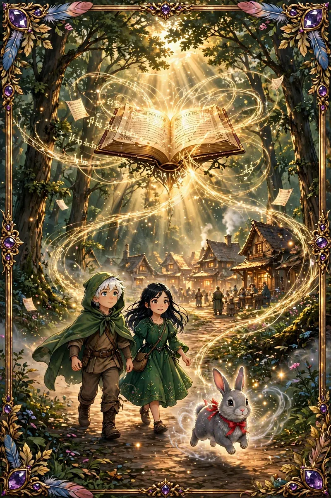

Relato • El regreso
El regreso al pueblo
Cuando el primer rayo de sol atravesó el dosel del bosque, Liam y Elara, revitalizados por su experiencia en el claro, regresaron a su pueblo. Las palabras del Conejo Místico aún resonaban en sus mentes, y comprendían que la clave para transformar su comunidad residía en las preguntas poderosas que desvelarían las historias ocultas dentro de sus corazones y mentes. Este capítulo marcaría un punto de inflexión en su viaje, llevando a su pueblo a un profundo proceso de introspección y revelación.
